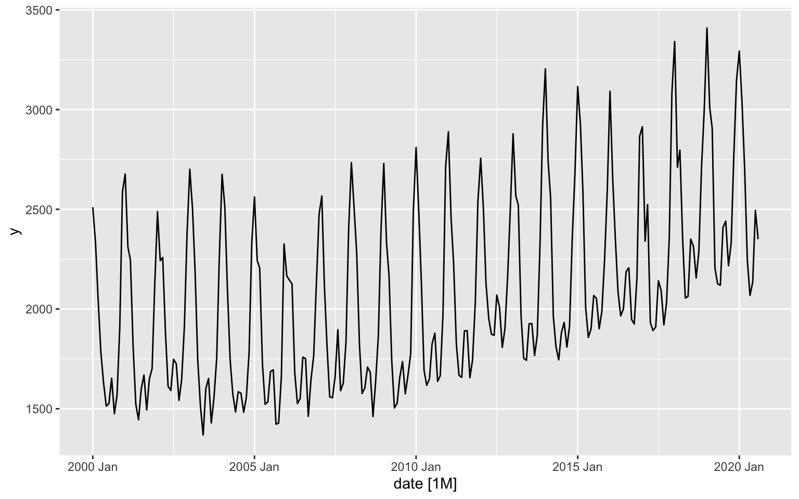
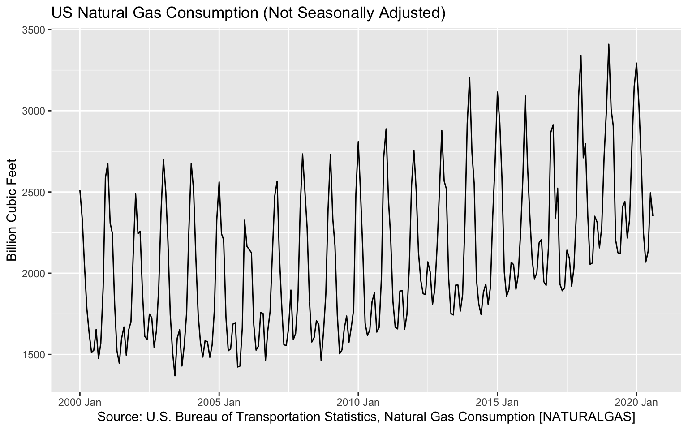

Currently, the main method for visualize tsibble objects is with the autoplot function from fabletools / ggplot2 packages to create auto-plots of tsibble objects.
Let’s load and transform the natural gas consumption in the US into tsibble object and plot it:
library(tsibble)
library(fabletools)
library(dplyr)
naturalgas_path <- paste(rprojroot::find_rstudio_root_file(), "data", "NATURALGAS.csv", sep = "/")
us_gas <- read.csv(naturalgas_path, stringsAsFactors = FALSE) %>%
setNames(c("date", "y")) %>%
mutate(date = yearmonth(as.Date(date))) %>%
as_tsibble(index = "date")
us_gas %>% autoplot(.vars = y) 
As the autoplot function exported from the ggplot2 package, we can customize the plot and add additional layers using any of the ggplot2 package functionality:
library(ggplot2)
us_gas %>% autoplot(.vars = y) +
xlab("Source: U.S. Bureau of Transportation Statistics, Natural Gas Consumption [NATURALGAS]") +
ylab("Billion Cubic Feet") +
ggtitle("US Natural Gas Consumption (Not Seasonally Adjusted)")
Last but not least, we can convert the plot into a plotly object using the ggplotly function from the plotly package:
library(plotly)
p <- us_gas %>% autoplot(.vars = y) +
xlab("Source: U.S. Bureau of Transportation Statistics, Natural Gas Consumption [NATURALGAS]") +
ylab("Billion Cubic Feet") +
ggtitle("US Natural Gas Consumption (Not Seasonally Adjusted)")
ggplotly(p)The autoplot function automatically idenify the tsibble object key, if exists, and plot the series accordignlly. In the following example we will plot all trips to Sydney by trip type using the tourism dataset. Let’s first subset the the dataset to all trips to region Sydney:
data("tourism")
sydney <- tourism %>% filter(Region == "Sydney")
head(sydney)## # A tsibble: 6 x 5 [1Q]
## # Key: Region, State, Purpose [1]
## Quarter Region State Purpose Trips
## <qtr> <chr> <chr> <chr> <dbl>
## 1 1998 Q1 Sydney New South Wales Business 525.
## 2 1998 Q2 Sydney New South Wales Business 545.
## 3 1998 Q3 Sydney New South Wales Business 691.
## 4 1998 Q4 Sydney New South Wales Business 599.
## 5 1999 Q1 Sydney New South Wales Business 444.
## 6 1999 Q2 Sydney New South Wales Business 794.key_data(sydney)## # A tibble: 4 x 4
## Region State Purpose .rows
## * <chr> <chr> <chr> <list<int>>
## 1 Sydney New South Wales Business [80]
## 2 Sydney New South Wales Holiday [80]
## 3 Sydney New South Wales Other [80]
## 4 Sydney New South Wales Visiting [80]As you can see from the output of the key_data, there are 4 unique series in the Sydney trips subset. We will now plot those series with the autoplot and ggplot funtions:
p <- sydney %>% autoplot()
ggplotly(p) %>%
layout(title = "Sydney Domestic Overnight Trups by Purpose",
yaxis = list(title = "Overnight Trips in Thousands"),
xaxis = list(title = "Source: tsibble package"))While the ggplotly function enables us to transform a static ggplot2 plot into an interactive plotly object, it is harder to apply the layout functionality. An alternative approach would be to plot the object directly with the plotly package. Let’s replot the consumption of natural gas in the US:
us_gas %>%
plot_ly(x = ~ date,
y = ~ y,
type = "scatter",
mode = "lines") %>%
layout(title = "US Natural Gas Consumption (Not Seasonally Adjusted)",
yaxis = list(title = "Billion Cubic Feet"),
xaxis = list(title = "Source: U.S. Bureau of Transportation Statistics, Natural Gas Consumption [NATURALGAS]"))One thing to notice - the attribute of the object index, the yearmon class, is lost. One way to fix it is to convert the object index to a Date object:
us_gas %>%
plot_ly(x = ~ as.Date(date),
y = ~ y,
type = "scatter",
mode = "lines") %>%
layout(title = "US Natural Gas Consumption (Not Seasonally Adjusted)",
yaxis = list(title = "Billion Cubic Feet"),
xaxis = list(title = "Source: U.S. Bureau of Transportation Statistics, Natural Gas Consumption [NATURALGAS]",
type = "date",
tickformat = "%b %Y"))Similarly, we can plot the sydney series we created earlier by creating a unique id by the different series key columns, subset, and plot with the add_lines function:
sydney$id <- do.call(paste, c(sydney[,key_vars(sydney)], sep = "|"))
head(sydney)## # A tsibble: 6 x 6 [1Q]
## # Key: Region, State, Purpose [1]
## Quarter Region State Purpose Trips id
## <qtr> <chr> <chr> <chr> <dbl> <chr>
## 1 1998 Q1 Sydney New South Wales Business 525. Sydney|New South Wales|Business
## 2 1998 Q2 Sydney New South Wales Business 545. Sydney|New South Wales|Business
## 3 1998 Q3 Sydney New South Wales Business 691. Sydney|New South Wales|Business
## 4 1998 Q4 Sydney New South Wales Business 599. Sydney|New South Wales|Business
## 5 1999 Q1 Sydney New South Wales Business 444. Sydney|New South Wales|Business
## 6 1999 Q2 Sydney New South Wales Business 794. Sydney|New South Wales|Businessp <- plot_ly()
for(i in unique(sydney$id)){
df <- sydney %>% filter(id == i)
p <- p %>%
add_lines(x = as.Date(df$Quarter),
y = df$Trips,
type = "scatter",
mode = "lines",
name = i)
}
p %>% layout(legend = list(orientation = "h"))us_abs_path <- paste(rprojroot::find_rstudio_root_file(), "data", "Alcoholic Beverages Sales.csv", sep = "/")
us_abs <- read.csv(us_abs_path, stringsAsFactors = FALSE) %>%
setNames(c("date", "y")) %>%
mutate(index = yearmonth(as.Date(date))) %>%
select(-date) %>%
as_tsibble(index = index)ca_elec_path <- paste(rprojroot::find_rstudio_root_file(), "data", "ca_elec.rda", sep = "/")
load(ca_elec_path)
ca_elec_ts <- ca_elec %>%
as_tsibble(index = date_time, key = operator)